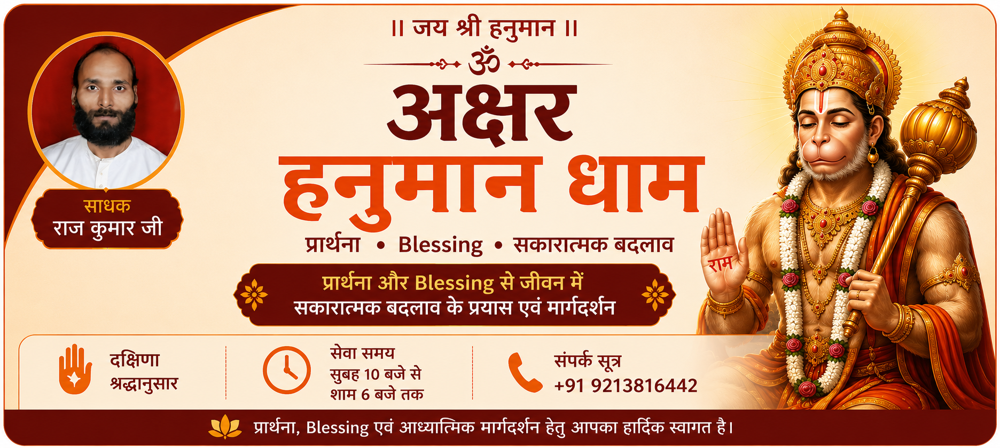
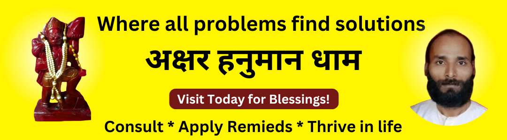

जब बहुत प्रयास के बाद भी जीवन की समस्याओं का समाधान न मिले, तो कई बार व्यक्ति को केवल मेहनत नहीं बल्कि ईश्वरीय कृपा और सकारात्मक ऊर्जा की भी आवश्यकता होती है।
Blessing केवल शब्द नहीं, बल्कि सकारात्मक भाव, शुभ संकल्प और आध्यात्मिक ऊर्जा का माध्यम मानी जाती है।
Akshar Hanuman Dham Delhi में साधक राज कुमार जी वर्षों से लोगों को Spiritual Guidance और Blessing प्रदान कर रहे हैं।
कई लोग जीवन में दिन-रात मेहनत करते हैं, मंत्र जाप करते हैं, ध्यान करते हैं, सकारात्मक सोच रखते हैं — फिर भी कुछ समस्याएँ बार-बार सामने आती रहती हैं।
कभी मानसिक तनाव, कभी लगातार रुकावट, कभी परिवारिक अशांति, कभी कार्यों में असफलता व्यक्ति को भीतर से कमजोर करने लगती है।
ऐसे समय में अनुभवी साधक की Blessing व्यक्ति के भीतर सकारात्मकता, आत्मविश्वास और मानसिक शांति को बढ़ाने में सहायक हो सकती है।
Akshar Hanuman Dham Delhi में साधक राज कुमार जी वर्षों से लोगों को Spiritual Guidance और Blessing प्रदान कर रहे हैं।

Blessing सेवा के लिए कोई fixed fee नहीं। केवल श्रद्धानुसार।
वर्षों से Spiritual Guidance और Blessing सेवा।
हर व्यक्ति से समान भाव से मिलने का प्रयास।
महंगे हवन, यज्ञ, माला या वस्तुएँ खरीदने का दबाव नहीं।
केवल weekly नहीं, नियमित रूप से लोगों की सहायता का प्रयास।
मानसिक शांति और सकारात्मक ऊर्जा के लिए शांत आध्यात्मिक वातावरण।
यदि आप Spiritual Guidance, Blessing और मानसिक शांति की तलाश में हैं, तो Akshar Hanuman Dham Delhi आकर साधक राज कुमार जी से मिल सकते हैं।
📞 9213816442Akshar Hanuman Dham Delhi
J 34/209, Gali No.4,
West Sagarpur,
New Delhi - 110046
📞 9213816442
🗺️ Open Google Map